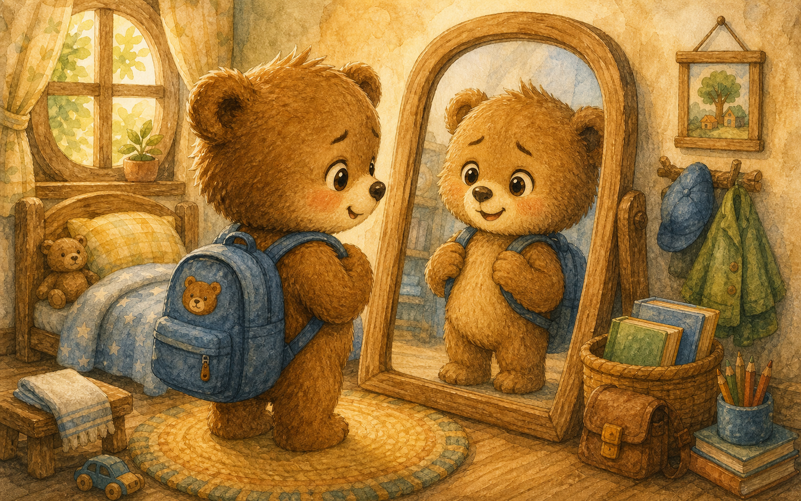
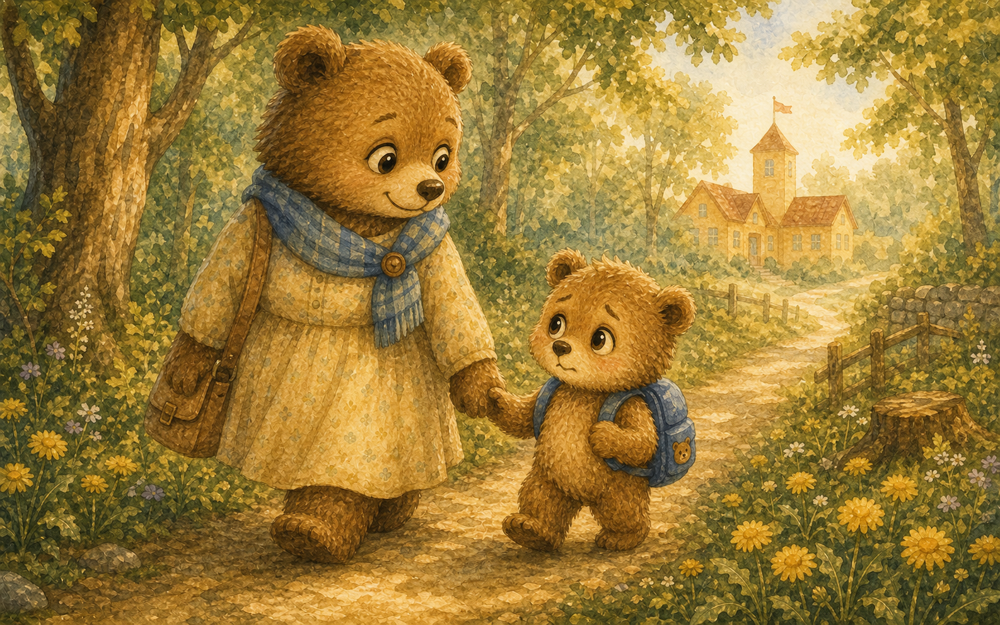
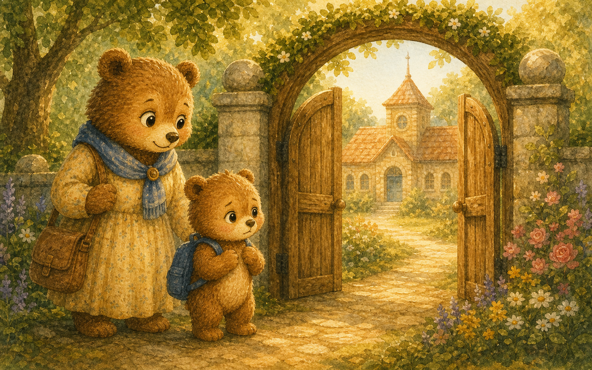
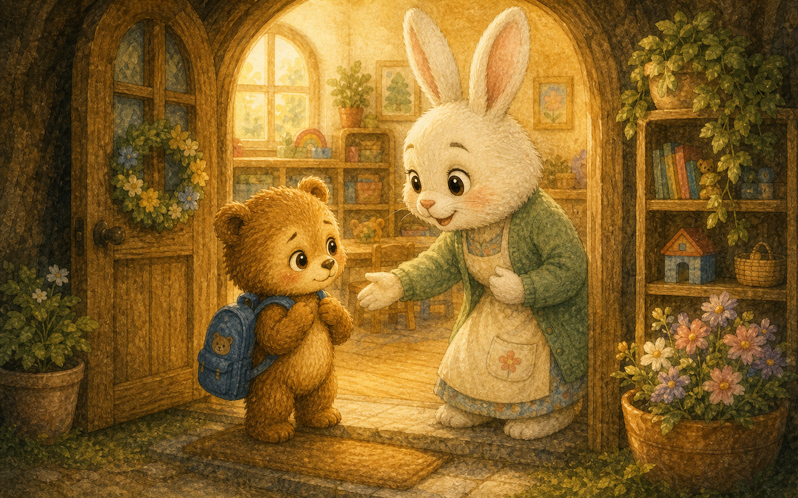
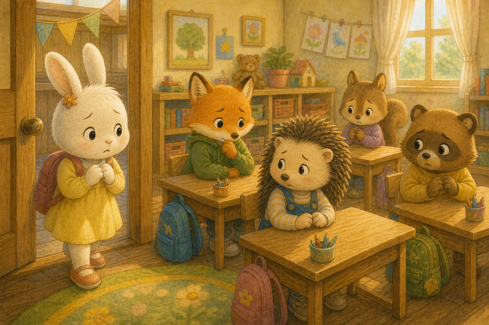
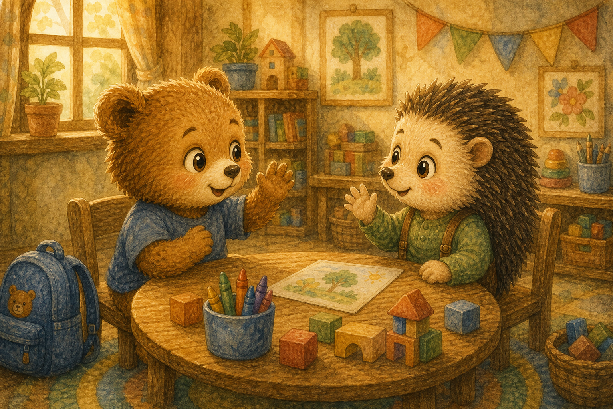
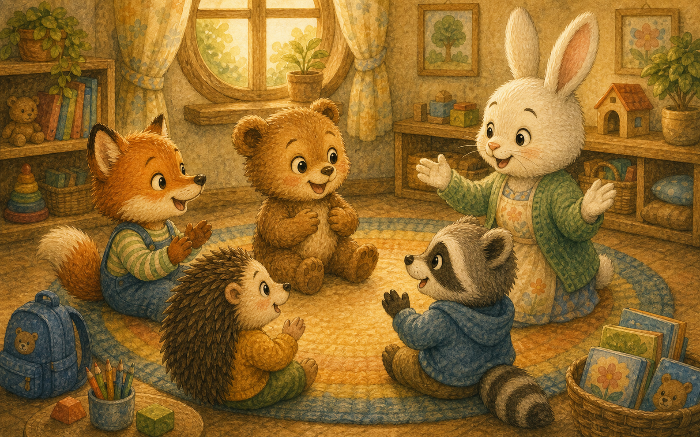
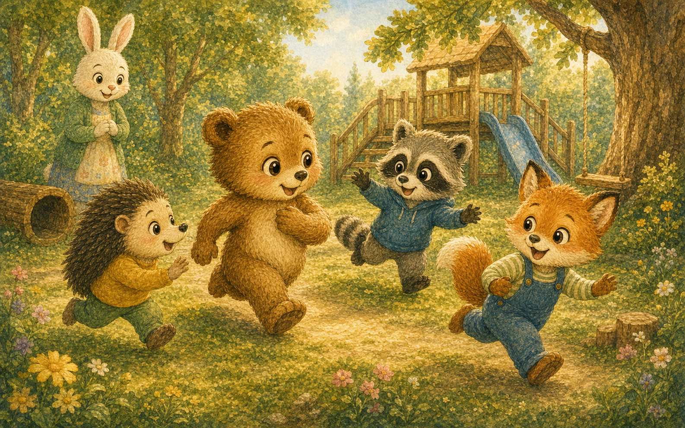
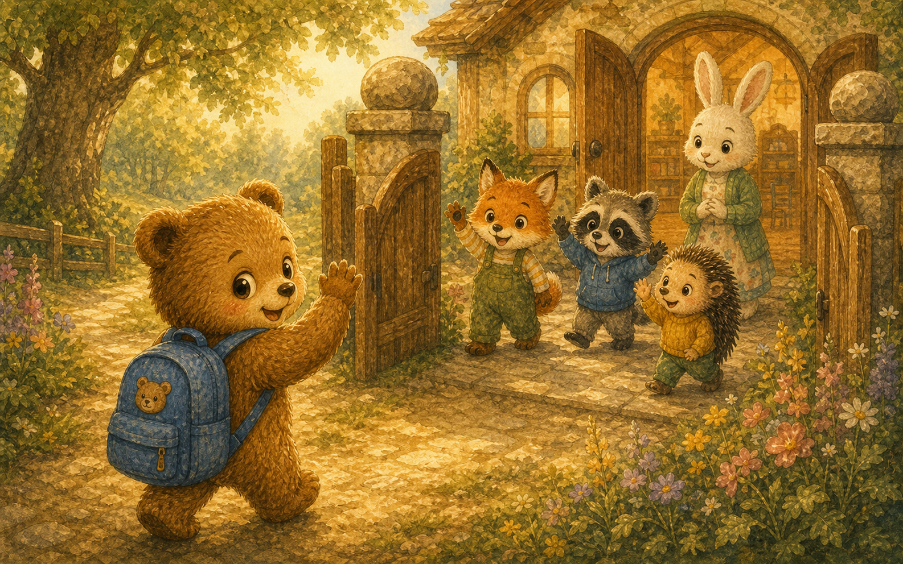
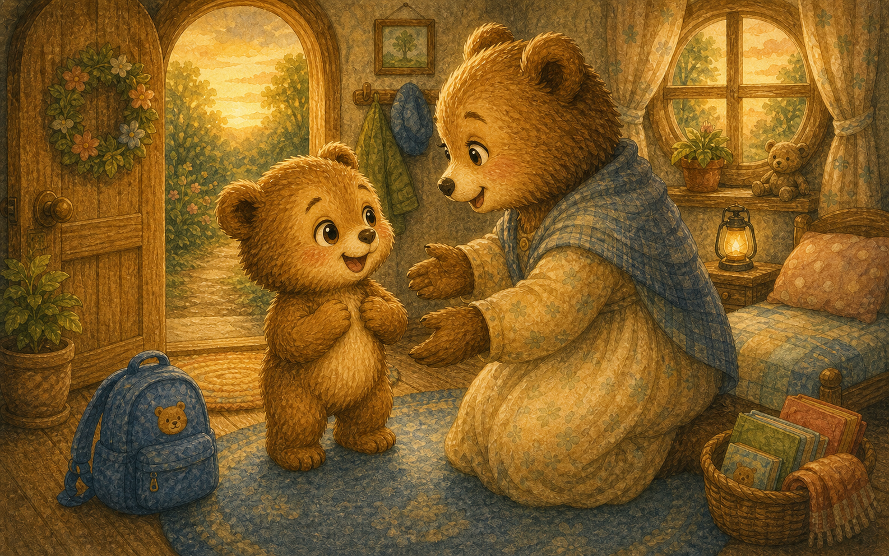

두근두근 첫날
아기 곰 보리는 새 책가방을 메고 거울 앞에 섰어요. 오늘은 학교에 처음 가는 날이었지요.
"설레는데 조금 떨리기도 해."

아기 곰 보리는 새 책가방을 메고 거울 앞에 섰어요. 오늘은 학교에 처음 가는 날이었지요.
"설레는데 조금 떨리기도 해."

엄마 곰이 보리의 손을 따뜻하게 잡아 주었어요. 학교 가는 길에는 노란 민들레가 피어 있었지요.
"네가 잘할 거라고 엄마는 믿어."

학교 문은 보리보다 훨씬 커 보였어요. 보리는 문 앞에서 잠시 발이 멈췄답니다.
"안에는 누가 있을까?"

문 안에서 토끼 선생님이 환하게 웃으며 인사했어요. 따뜻한 목소리에 보리의 마음이 살짝 풀렸지요.
"어서 와, 보리야. 기다렸어."

교실에는 여우, 너구리, 고슴도치 친구들이 있었어요. 모두 보리처럼 조금씩 긴장한 얼굴이었지요.
"나만 떨린 게 아니었구나."

옆자리 고슴도치가 먼저 이름을 알려 주었어요. 보리도 용기를 내어 인사를 건넸답니다.
"안녕, 나는 보리야. 같이 놀자."

선생님이 손뼉을 치며 노래를 가르쳐 주었어요. 모두 함께 부르니 교실이 즐거움으로 가득 찼지요.
떨리던 마음이 노래 속으로 사라졌어요.

쉬는 시간에는 운동장에서 술래잡기를 했어요. 보리는 깔깔 웃으며 친구들과 뛰어다녔답니다.
"학교가 이렇게 재밌는 곳이었어!"

어느새 하교 시간이 되었어요. 보리는 새 친구들에게 손을 흔들며 인사했지요.
"내일 또 만나! 약속!"

집에 돌아온 보리는 엄마에게 오늘 이야기를 와르르 쏟아냈어요. 처음이라 떨렸지만 정말 멋진 하루였답니다.
"엄마, 나 학교 다닐 수 있어!"